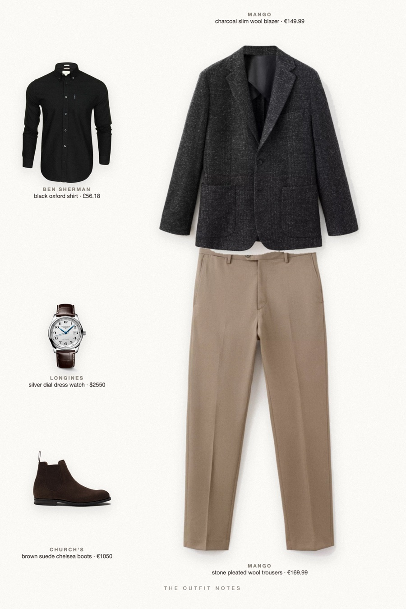
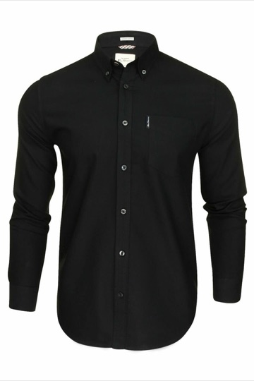

Midnight Charcoal
open collar, stone trousers

New Year's Eve outfit men: a slim charcoal wool blazer over an open-collar black oxford shirt, stone pleated wool trousers, Church's suede chelsea boots and a Longines Master Collection watch. A holiday party outfit men can wear from the office party to midnight, sharp and quiet.
The pieces
This page contains affiliate links: if you buy through them, we may earn a commission at no extra cost to you. Disclosure.
 Mango
Mango
Charcoal slim wool blazer
Shop
Ben Sherman
Black oxford shirt
Shop Mango
Mango
Stone pleated wool trousers
Shop Church's
Church's
Brown suede chelsea boots
Shop Longines
Longines
Silver dial dress watch
Shop
Prices are indicative, taken when the look was published, and may have changed. Pictures of the outfit are AI-generated illustrations of real products; the product photos are the retailers' own.
Published 2 October 2026.